Je libo...
- Rasta copánky
- Francouzské copánky
- Úpravy dreadů
-
Volné termíny
- Henna
- Karetky
-
- Fotogalerie
- Ceník
- Kontakt
- Vzkazy
- Odkazy
Evanii - rasta copánky v Brně
Copánky
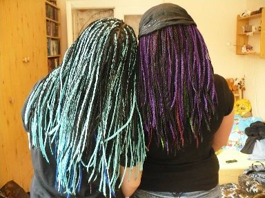Zabývám se již více jak 10 let pletením rasta copánků, pletením francouzských copánků i různých copánků se zapletenými korálky. Mám ráda experimenty, takže se nebojím pokusit se na hlavě stvořit cokoli si namyslíte. Mnou napletené copánky si můžete prohlédnout v galerii. Zajímá vás více ohledně rasta copánků a péče o ně? Čtěte dále v sekci otázky a rady. Chcete-li naplést copánky můžete si přečíst orientační ceník mých prací a poté se objednat.
Druhy copánků
-
Rasta
kanekalon chemlon 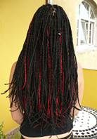 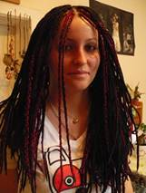 -
Open rasta
Pony micro ZiZi ravish bulk bohemian braid 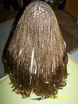 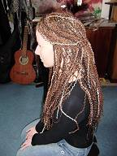 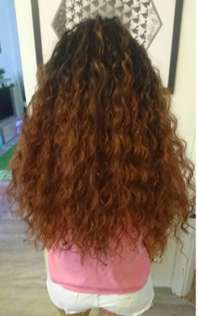 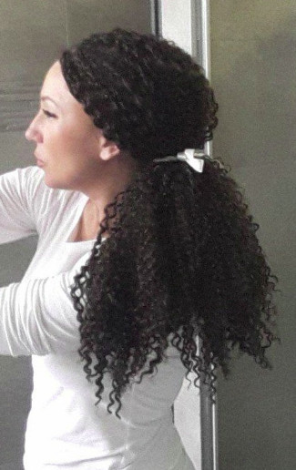 -
Francouzské
pletené spodem pletené horem 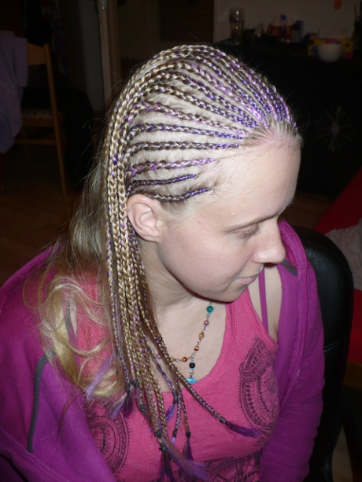 
-
Kombinace
Kombinace francouzských + rasta 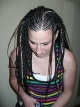 -
Korálkové
V rasta copáncích Ve francouzských 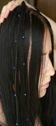 
-
Možnost zakončení copánků a finální úprava
Ukončení ohněm Ukončení horkou vodou 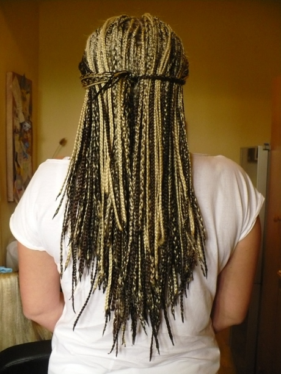 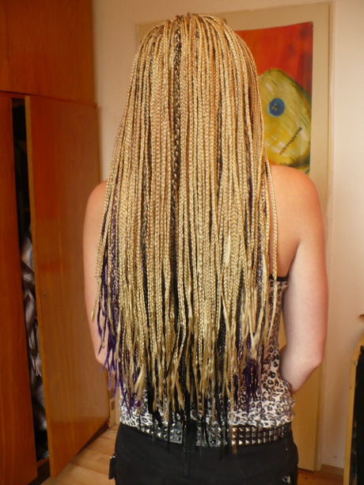 Závěrečné zvlnění 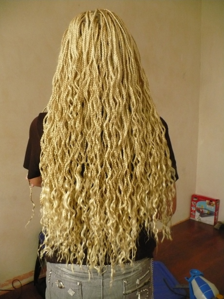

Rasta copánky
Materiály, které používám pro naplétání
-
Kanekalon
Kvalitní syntetický materiál, který je velmi podobný skutečným vlasům. Na internetu je dostupný v mnoha barevných variantách. Oproti jiným materiálům nesaje moc vodu, copánky z něj vypadají přirozeně a vydrží déle. U kvalitnějších druhů kanekalonu je možné i copánky různě natáčet pomocí horké vody, barvit se samozřejmě copánky nedají. Všechny dostupné barvy najdete zde http://www.kanekalon.cz. Osobně doporučuji, pokud chcete mít copánky déle, rozhodně se vyplatí do tohoto materiálu investovat. Na napletení celé hlavy copánků se obvykle spotřebuje cca 5-6 balení. Záleží na tloušťce copánků a hustotě vlasů. Většinu typů kanekalonu lze mezi sebou kombinovat (v případě nejasností můžete konzultovat:).
Druhy kanekalonu
-
100% kanekalon Jumbo Braid: Kanekalon, který je na pletení copánků nejvhodnější. Vypadá naposto přirozeně. Hodí se i na nastavování dreadů. Na celou hlavu copánků je třeba 4-6 balení. Ideální délka vlasů na tento účes je 10-60 cm. Lze zakončovat ohněm (tj. ostře) nebo ponechat otevřené konce, copánky z něj lze vlnit a zpětně narovnat. K objednání zde.
-
100% kanekalon Ultra Braid: Tento kanekalon má obdobné vlastnosti jako 100% kanekalon Jumbo Braid. Jeho délka je přibližně dvojnásobná oproti běžnému kanekalonu, dají se z něj plést buď klasické copánky z jeho přepůlené délky (vycházejí pak o něco kratší než z klasického) nebo extra dlouhé. Délka vlasů na účes z tooto typu kanekalonu je až 100 cm. Extra dlouhé copánky doporučuji plést jen v případě extrémně dlouhých vlasů, kdy není jiná možnost a doporučuji plést menší množství copánků, kvůli většímu zatížení váhou materiálu. Lze zakončovat ohněm (tj. ostře) nebo ponechat otevřené konce, copánky z něj lze vlnit i zpětně narovnat. K objednání zde.
-
100% kanekalon Pony: Hodí se hlavně na copánky s otevřeným koncem (tzv. „open rasta“). Na celou hlavu je třeba 6-7 balení, otevřené konce vyžadují větší péči než klasicky ukončené. Je dostupný i v přechodné kombinaci barev (např. černá s červenými konci apod.). K objednání zde.
-
Synt. kanekalon Jumbo Braid: Levnější varianta kanekalonu Braid. Vypadá také relativně přirozeně, je ale o něco lesklejší. Tento kanekalon je kratší než 100%, proto jsou copánky z něj upletené, dlouhé asi do půli zad. Pokud chcete ze syntetického kanekalonu celou hlavu copánků, doporučuji si koupit 7-8 balíků. Tento kanekalon nejde zakončovat horkou vodou a nelze vlnit, není proto vhodný na copánky s otevřeným koncem. Maximální délka vlasů pro copánky z tohoto materiálu je asi 50 cm. K objednání zde.
-
Kanekalon Mono Braid: Obdoba kanekalonu Pony, jen není konec zatočený do "vlnky", ale zcela rovný. Materiál je také o něco kratší. K objednání zde.
-
Kanekalon micro ZiZi: Velmi zajímavá varianta kanekalonu. Pletou se z něj copánky s otevřeným koncem. Jedná se o již předpletené drobné copánky, které jsou navíc zvlněné. Pokud se nebojíte extrémně bohatého a extravagantního účesu, je to dobrá volba. Na celou hlavu je třeba 7-10 balení. Tento typ kanekalonu je naprosto bezúdržbový, oproti jiným variantám s otevřeným koncem. Jednou napletený kanekalon tohoto typu lze také znovu použít pro další pletení (po sundání doporučuji vyprat v teplé vodě se šampónem, nebo i v pračce na mírný program). Ideální délka vlasů na tento účes je 6-20 cm. Lze plést ale i z dlouhých, jen není výsledný objem opticky tak velký. K objednání zde.
-
Kanekalon Micro Braid (na www.kanekalon.cz jako rovný micro zizi): Ideální typ kanekalonu pro bohatý účes v kombinaci s řidšími vlasy nebo jen pro pocit extrémně bohatého účesu (ve výsledku má člověk na hlavě cca 600 velmi drobných copánků). Pletou se z něj tedy copánky s otevřeným koncem. Jedná se o již přepletené drobné copánky v rovné variantě. účes působí velmi bohatě a není třeba plést velké množství copánků. Na celou hlavu je třeba cca 8-10 balení (1 balík stačí na necelých 20 copánků). Jednou napletený kanekalon tohoto typu lze také znovu použít pro další pletení (po sundání doporučuji vyprat v teplé vodě se šampónem, nebo i v pračce na mírný program). Ideální délka vlasů na tento účes je 6-20 cm. Lze plést ale i z dlouhých, jen není výsledný objem opticky tak velký. K objednání zde.
-
Ostatní: Existují i jiné typy kanekalonu, například různě ondulované, ze kterých se pletou zpravidla open rasta. Pokud si takovýto materiál seženete, nečiní mi problém z něj copánky vytvořit. Neváhejte mi napsat a zeptat se :)
Braid Pony ZiZi 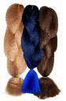 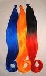 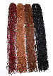 -
-
Chemlon
Chemlon je příze z umělého vlákna, která není primárně určena na pletené copánků. Pletly se z něj dříve například papuče nebo se z něj vyráběly rohožky, v době nedostupnosti kanekalonu se hojne pro pletení copánků používal. Copánky z chemlonu nedoporučuji a už delší dobu z něj vůbec nepletu. V dnešní době existuje spousta druhů kvalitnějších materiálů, i cenově dostupných, takže není třeba k tomuto materiálu sahat :)
Chemlon 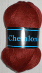 -
Vlna
Některé pletařky a "salony" používají na pletení i jiné materiály, např. vlnu/akryl, ale výsledek nevypadá hezky, účes působí nepřirozeně a navíc copánky z vlny dost hřejí a nejsou příjemné na nošení. Pletení copánků z těchto materiálů rozhodně NEDOPORUČUJI.
-
Vlastní vlasy
Copánky po celé hlavě jde samozřejmě uplést i jen z vlastních vlasů, je to nejlevnější varianta neboť není potřeba kupovat žádný materiál, upletení trvá kratší dobu, ale vypadá to pak, že máte o dost méně vlasů. Jejich životnost také není moc dlouhá. Varianta je to vhodná pouze pro osoby s extrémněhustými vlasy.
Otázky a rady
Rasta copánky se dají naplétat na vlasy od 5 cm (to je ale opravdu hranice), u příliš krátkých vlasů hrozí riziko, že copánek upadne. Osobně doporučuji alespoň 10 cm!
Může se to umývat? Samozřejmě! Toto je asi nejčastější dotaz, který slýchám :) Copánky myjeme jako normální vlasy, jen není třeba tak často. Bohatě staší jednou za týden až dva. Řiďte se svým pocitem, až budete mít pocit, že vlasy potřebují umýt, prostě je umyjte. U copánků musíte počítat s delší dobou schnutí, ale lze je i fénovat. Při mytí si dejte pozor na pečlivé vymytí šampónu (pokud by na hlavě zůstal, může pokožku dráždit).
Musím se po copáncích stříhat na krátko? Ne! To, že čím déle copánky na hlavě máte, tím hůře jsou rozčesatelné, je ale holý fakt. Přestože sundávání copánků je na celých rasta copáncích ta nejnepříjemnější věc, copánky se dají opravdu celkem dobře rozplést. Chce to ale trochu trpělivosti. Po rozpletení je dobré nechat vlasy chvíli odpočinout, pořádně je umýt a poté je možné naplést nové. Při rozplétání se hodně vlasů vyčeše, ale nepanikařte, člověku vypadne spousta vlasů každý den a ty pak zůstávají v copánku, takže se teprve po rozpletení odstraní. Copánky doporučuji rozdělávat po jednom a každý zvlášť pečlivě rozčesat. V případě sundání všech copánků a teprve následném česání si vytrháte zvytečně mnoho vlasů. Rozplétání také doporučuji provádět na sucho (na evropských vlasech) a teprve po kvalitním rozčesání je možné použít kondicionér a další přípravky. Při rozplétání si pozvěte někoho na pomoc, ušetříte si tak zbytečné nervy :). Opravdu lze bez velké újmy na vlasech rozčesat i rok staré copánky, mnoho zákaznic je toho důkazem, jen je potřeba počítat s delším časem rozplétání.
Jak dlouho copánky vydrží? Hodně záleží na rychlosti růstu vašich vlasů a také každému vadí jiná míra „odrostu“ copánků. Obecně se ale dá říct, že copánky z kanekalonu vydrží tak dlouho, dokud si je nesundáte:) Běžně ale uvádím 3-5 měsíců - to je hranice toho, kdy se copánky ještě relativně dobře rozčesávají. Po nějakém čase se také dají copánky na nejviditelnějších místech přeplést (okolo čela a pěšinky) a tím se jejich životnost prodlouží. Když jsou copánky už trochu odrostlé, snadno se to dá zamaskovat látkovou čelenkou.
Kolik copánků budu mít na hlavě? To je individuální, dají se plést tlustší nebo tenší. Záleží také dost na kvalitě vlasů (není možné ani vhodné například naplést 250 copánků na slabé a řídké vlasy). Ideální je podle mě počet 150-200 copánků. Když je jich více, už to nevypadá moc přirozeně a vlasy jsou zbytečně zatěžovány (to však neplatí striktně pro každého). Nejčastěji pletu okolo 170-180 copánků, není však problém po domluvě naplést například 300 hodně tenkých copánků. Copánky ale nejsou soutěž v tom, kdo jich bude mít na hlavě víc, vždy je potřeba počet přizpůsobit typu a kvalitě vlasů. Ráda Vám poradím, jaké množství je právě pro Vaše vlasy nejvhodnější.
Co s vyrážkou a svěděním? Pokožka hlavy může být v některých případech po napletení copánků citlivější a někdy se může vytvořit i mírná svědící vyrážka. Na tento problém se velmi osvědčila vlasová voda Dixi, která se dá sehnat ve většině drogerií, lze mazat i dětským olejíčkem. Obvykle však svědění a pupínky po čase samy vymizí, bývá to většinou reakce na utažení čerstvě napleteného copánku a natažení pokožky.
Mohu znovu použít jednou napletený materiál? Ne, nedoporučuji. Jedinou výjimku tvoží kanekalon micro zizi a micro braid. Ten lze naplést opakovaně (po jeho vyprání) - na požádání vysvětlím postup.
Máte další dotaz? Ráda Vám se vším poradím a při pletení všechnu potřebnou péči objasním :)
Proč copánky od nás?
Jak si vybrat kvalitní pletařku?
Rozhodla jsem se sem vložit těchto pár bodů, neboť se stále častěji setkávám s velmi nekvalitně napletenými copánky, které pak musím často přeplétat a je to zbytečná práce a zbytečný stres pro zákaznici
Francouzské copánky
Jedná se o copánky, které jsou připletené jakoby u hlavy. Dají se plést buď jenom z vlastních vlasů nebo se do nich dá zaplést kanekalon. Je to vhodný účes na cestování, sport, na léto nebo mohou posloužit i jako společenský účes. Na francouzské copánky je potřeba mít vlasy alespoň 10cm dlouhé, ale platí, že čím jsou vlasy delší, tím déle pak copánky vydrží. Přidáním kanekalonu se životnost copánků obvykle zvýší. Nosit se obvykle dají 14 dní až 1 měsíc. Dají se doplnit i o rasta copánky nebo korálky.
Dají se plést v různých pruzích, ornamentech, vlnovkách, spirálách, atd. fantazii se meze nekladou. Dají se uplést po celé hlavě, nebo jenom zepředu hlavy jako "čelenka". Existují dva způsoby pletení, copánky podbírané (jako můžete vidět na většině černošských účesů) a copánky přebírané, které jsou u nás častější. Osobně doporučuji a pletu podbírané copánky, protože vypadají lépe (což je ale věc vkusu). Můžete se však i sami rozhodnout pro druhý styl pletení - umím plést oběma způsoby. Upletení copánků trvá podle složitosti 30 min - 3 hodiny.
Nekteré možné styly pletení francouzských copánků
Možností je však daleko více, fantazii a vlastní invenci se meze nekladou :-)
| "Čelenka" s kanekalonem (pletené spodem) | "Šipky" s kanekalonem (pletené spodem) | Velmi tenké fr. copánky z vlastních vlasů (pletené spodem) |

|
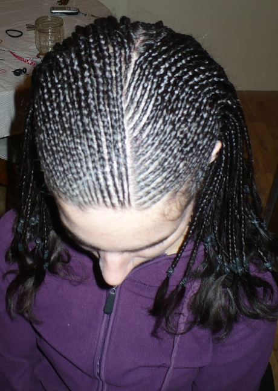 |
| Patka s korálkami (pletené horem) | Rovnoběžné s korálkami (pletené horem) | Bez předlohy dle fantazie s korálkami (pletené spodem) |

|

|

|
| Volně podle fantazie (pletené horem) | Zubaté pěšinky (pletené horem) | Kombinace francouzských a rasta copánků |
|
|
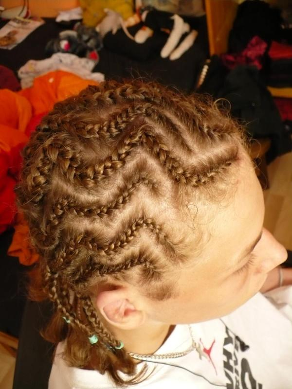 |
 |

{kind=link}
{kind=link}
{kind=link}
{kind=link}
{kind=link}
{kind=link}
{kind=link}
{kind=link}
{kind=link}
{kind=link}
{kind=link}
{kind=link}
{kind=link}
{kind=link}
{kind=link}
{kind=link}
{kind=link}
{kind=link}